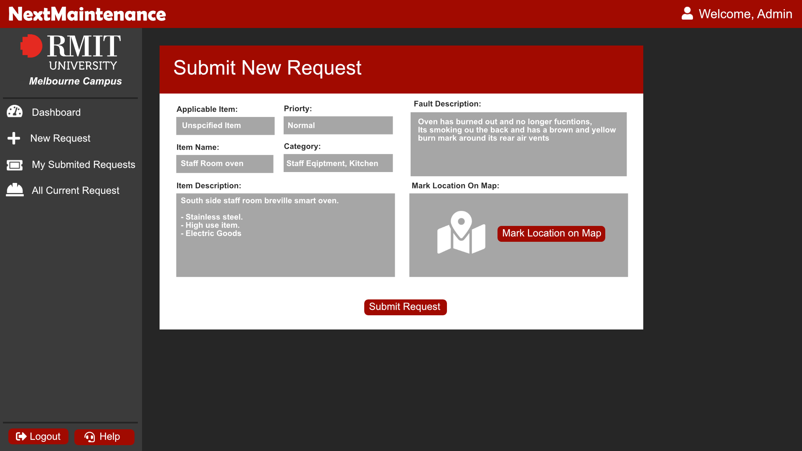
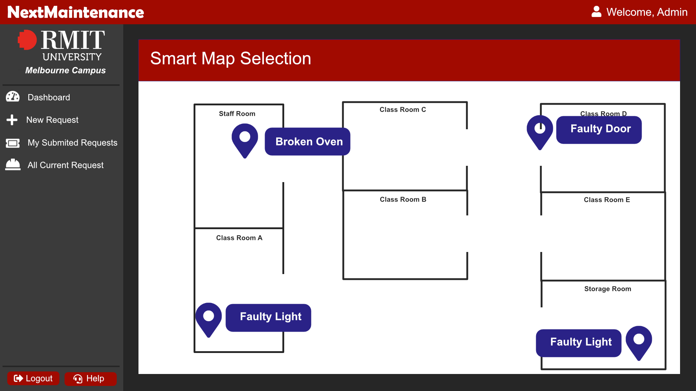

Overview
NextMaintenance is an innovative SaaS solution for companies who want to reimagine and streamline maintenance requests and management. It will have a core focused on providing companies with a robust and modern solution to maintenance request and management. Next Maintenance will have two main focused points to separate it from other current industry standards, firstly it will be focused on providing users with an overview facility map for when they submit a maintenance request, this allows them to mark the location for the maintenance team to quickly find and identity later. This will be very beneficial for large facilities with a large facility and will help reduce the time spend finding the specific issue allowing for it to be resolved quicker.
The second core feature will be the programs’ ability to look at the map and pre-existing requests and make an assessment as to if the issue has already been reported. This will allow for a reduction in duplicate requests and a more streamlined system.
Motivation
My motivation for pursuing this project comes from my experience in corporate work environments with a large facility and ineffective maintenance management software. I have identified the key areas that I believe need to be improved or added to make a suite that provides the company with the best benefits.
The core experience for this is my time spent working at Peninsula Hot Springs as a Senior Pool Attendant, during that time I had to consistently convene with maintenance and physically show them what path or pool lights needed replacing. Due to the size of the facility and the inability for our maintenance software to specify marks points on a map, this led to a lot of unnecessary back and forth time that could have been spent replacing the path and pool lights quicker. For these reasons I have provided I believe an interactive map with the ability to mark points is a virial key feature in allowing for the correct communication for locations of items that need fixing or replacing. Expanding on the having a smart system that looks at map positions and request titles and descriptions to flag duplicate requests is key as well as communication between staff regarding who has submitted what request can sometimes break down.
Description
NextMaintenance will be a sleek, modern, and integrated intelligent maintenance manger system. It will have several core features built in, the first and most critical is the maintenance ticketing system, followed by the smart interactive map system for creating and locating items, lastly its smart duplication detection system will help reduce duplicate requests being submitted and free up administration time.

Moch Image Displaying Concept Art | Submit New Request
Maintenance request requests
This system will allow users to create requests for specific pieces of company infrastructure that need fixing or upgrading requests also support unspecified items such as path lights and curbs and paths. When creating a maintenance request the user will have a number of option available to them as well as a number of options getting prefilled by the system, firstly the user will select a pre-existing item if applicable, if not they will have the option to select “unspecified item” followed by the name of it, the system will then create a new item and add its database for next time based on this first entry, this means in order to build a repository of items the users only have to create tickets for them and the system does the rest, this will cut down a lot of manual adding time.
Requests are designed to work seamlessly with our interactive map system with a massive focus being placed on item locations within the facility, staff greeting requests need to get the map location marker as close as possible on the map.
Smart Interactive Map
Expanding on the above the interactive map will open via a button on the submit request screen, this will display a facility map and the user can put down a marker specifically at the location of the item, the system will also flag and display requests on this map back to the user allowing them to quickly and easily see if an item has been submitted and placed on the map already. If you place a item right next to a already submitted request you will get a system popup confirming that you might be submitting a duplicate item and asking you to confirm its placement.
The interactive map will be smart and display all currently submitted items as well as any item marked as important, this means that a manager can mark the swimming pool filter and pumps as important after submitting the first request to have them display all the time, this allows the system to group requests designed for this item and location together instead of adding additional map markers for each request.
Advanced duplicate detection
The NextMaintenance requests and smart map system will come together with an advanced duplicate request detector system, this system will work by examining several factors during the request creation system, firstly it will look at the item and fault description and analyse for common words.
For example the system will examine your request live and compare it to pre-existing requests, if a staff member starts to create a request for the staff room toaster, the system will flag the item and then check the fault description for common words, if it finds a number of identical words it will give you a notification saying “That request might have been created already, click here to compare” when the staff member clicks it will being up your current request creation form with a pre-existing request on the right hand side. This system won’t make the choice if it’s a duplicate but will provide the staff member or user every opportunity to assess if it is. Next the system will look at map placement and compare the item and fault description of two requests if the map location icons are in the same or very similar position (it will provide 1m2 of wiggle room for items). This means that if you add a request for a faulty path light in one section of the facility and we have pre-existing path light request at another location the system will not flag that as a duplicate.

Moch Image Displaying Concept Art | Smart Interactive Map
Tools and Technologies
To create NextMaintenance we will be using PHP as the core server side scripting language, we will be supplementing it with the ReactPHP library, NextMaintenance will be built to run exclusively as a standalone web application with the PHP server side backend, and Javascript, HTML and css front end running on the one website, this will allow us to deploy it to any webserver such as ISS apache and Nginx, whilst building a dedicated backend in larval and a dedicated front end in react.js would yield an extremely good result it wouldn’t have the versatility to be deployed to any web server like a normal web site/app.
I believe having this be able to run on any web server is a benefit that outweighs the benefits of a split front and backend like we see in a lot of modern web apps.
For tools PHPStorm would be a fantastic editor use to create the program, this would be supplemented by GitHub for version control, PHPStorm integrates fantastically with GitHub for an unbelievably seamless version control experience. Lastly a management app like trello would be key to managing the project especially if a team of talented people are involved in its development.
Skills Required
To start to develop a web app like NextMaintenance you would need a good understand of Object-Oriented programming in the PHP server-side programming language. To handle the data and information stored in the program you would also need experience in a database solution such as MySQl, Windows SQL Server or MariaDB and the associated PHP extension to handle database connections (mySQLi).
To assist in creating the front-end components you will need a medium to advanced knowledge in HTML and CSS backed by a minimal understand of JavaScript, a third-party library such as bootstrap will be unfathomably useful in quick creation of this web app.
-
Medium Understand of Object-Oriented PHP.
-
Great understand of HTML & CSS.
-
Medium understanding of MySQL or a SQL environment
-
Good understanding of MySQLi extension for PHP
-
Good understanding of JavaScript and Boostrap
-
Understanding of web hosting & environments
Outcome
If the program is developed the initial problems of duplicate maintenance requests, bad communication, unspecified locations, and time wasting would be solved and greatly reduced from a workplace that introduced the system.
The location based smart interactive map would totally negate any confusion caused by normal maintenance request systems and allow maintenance teams to respond and quickly identify the problem and resolve the problem. This will reduce manpower and wasted hours. Finally, the duplicate detection system would back this up and shrink the manpower needed to find and remove duplicate requests from the system, this will stream line the system and allow it to be a fantastic tool for companies to employ to streamline and upgrade the maintenance management and maintenance repose ability.